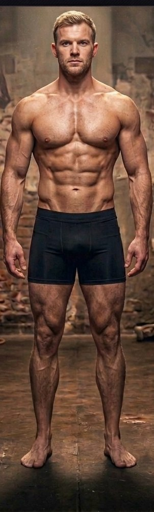

Discipline · Douleur · Force · Volonté
Carte musculaire
Clique sur un point du corps pour découvrir le muscle concerné, puis fonce directement sur les exercices qui le travaillent.
À propos des photos : ce sont tes propres photos. Clique sur un point pour découvrir le muscle et les exercices qui le travaillent.
